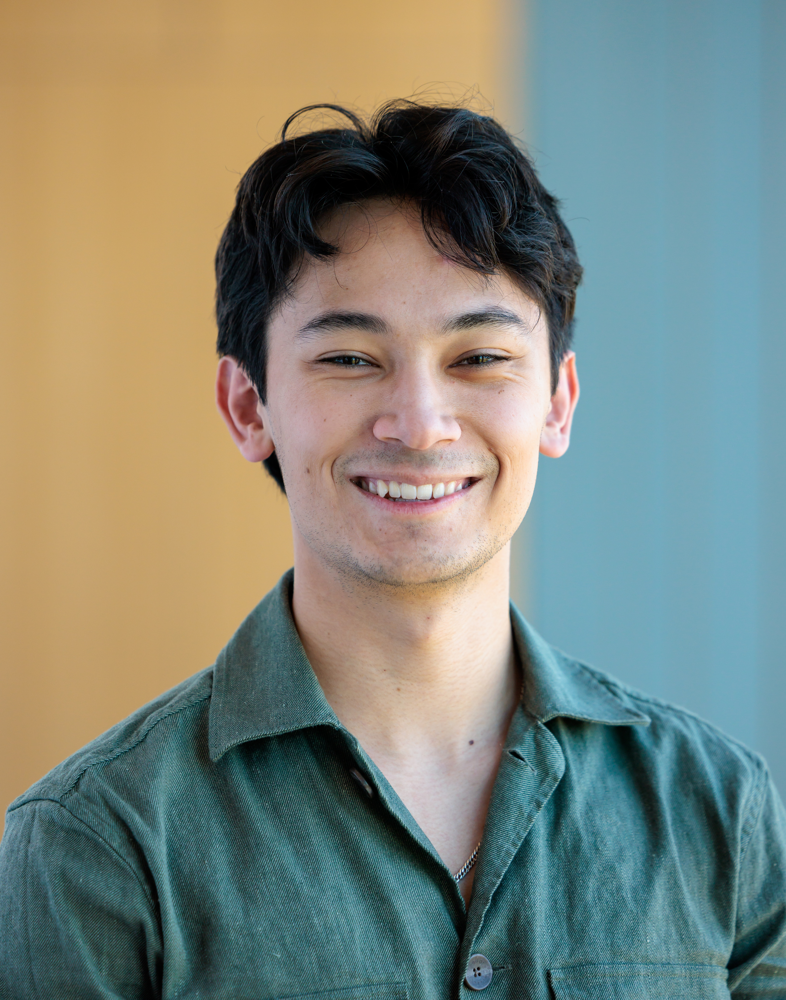

Data Scientist · Los Angeles, CA
Finding actionable value in large data to change how decisions are made.

I'm a data scientist based in Pasadena, CA with an M.S. in Applied Data Science from the University of Chicago and a B.S. in Applied Mathematics from UC Santa Barbara.
I'm drawn to problems that look solved but aren't. Most of my work involves finding structure in messy, high-variance domains where the data is sparse, the stakes are real, and the easy answer is usually wrong. I care about being correct more than being clever, and I hold a high bar for results that hold up under scrutiny from people who know what they're looking at. Recently that's meant building an AI analytics platform from scratch, leading causal inference research on a previously unstructured problem in baseball, and designing document intelligence systems that replaced expert manual review at scale.
Core Languages
AI & Machine Learning
Engineering & Cloud
Competencies
Selected Work
Developed a deterministic AI query engine that eliminated SQL hallucinations in natural language data retrieval. Architected a routing layer using DuckDB and FastAPI to ensure high-fidelity responses from high-dimensional spatiotemporal datasets.
Quantified cascading disruption risks across the U.S. air network using spatiotemporal machine learning. Built an XGBoost classifier (0.870 AUC) that identified systemic airport congestion as a higher predictor of delay than individual aircraft history.
Automated a complex financial extraction pipeline for 1,000+ unstructured records using Agentic RAG. Integrated OCRmyPDF and GPT-4 to convert sensitive energy data into structured assets, reducing manual processing time from hours to seconds.
Applied unsupervised clustering to high-dimensional datasets to identify distinct performance 'philosophies' hidden in aggregate metrics. Used Gaussian Mixture Models (GMM) to isolate strategic archetypes that consistently outperform baseline metrics in high-stakes environments.
Get In Touch
Open to data science roles in Los Angeles, Chicago, and New York.